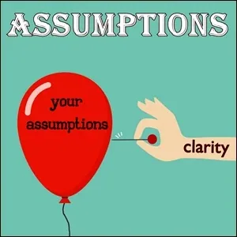
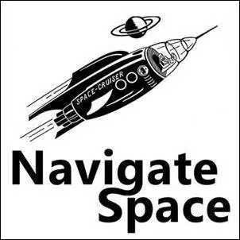

Not Knowing on Strikingly
[

](http://assumptions.mystrikingly.com/)
ASSUMPTIONS ABOUT KNOWLEDGE AND NON-KNOWLEDGE
Matrix Code NOTKNOWI.01
Write down 50 assumptions about knowing and not knowing. These can be assumptions that were made when you were in kindergarten and school and that you still carry with you. For example, one of my old assumptions is, "I assume that school is a place where kids learn things."
After completing this experiment, please register Matrix Code NOTKNOWI.01 in your free account at StartOver.xyz.
This Experiment is worth 1 Matrix Point.
[

](http://culturetoculture.mystrikingly.com/)
YOU HAVE NO IDEA ABOUT THIS
Matrix Code NOTKNOWI.02
Write down 50 things you have no idea about. I'm writing 50, but there are thousands of topics and things you have no idea about. The number of things you know anything about is much smaller than the number of things or topics you know nothing about.
After completing this experiment, please register Matrix Code NOTKNOWI.02 in your free account at StartOver.xyz.
This Experiment is worth 1 Matrix Point.
[

](http://navigatespace.mystrikingly.com/)
HOW A STRANGER BECAME AN ACQUAINTANCE
Matrix Code NOTKNOWI.03
Pick one item from your list of topics or things and spend a whole week researching what there is to explore and research about it. What are the people who know something about it? How can you get in touch with them so they can tell you about it? What articles, books, lectures can you find? How deeply can you research individual issues? For example, can you do a factory tour at a steel plant because you don't know anything about steel making? Is there a trade show about the topic?
Which of your 5 bodies are you feeding with your research? Is it just the intellectual body that accumulates knowledge like books in a library?
How are the other bodies learning about the subject? Involve all 5 bodies.
At the end of the week, write an article about your experiment titled: How a stranger became an acquaintance.
After completing this experiment, please register Matrix Code NOTKNOWI.03 in your free account at StartOver.xyz.
This Experiment is worth 1 Matrix Point.
[

](http://transformationalproposals.mystrikingly.com/)
WRONG ANSWER
Matrix Code NOTKNOWI.04
[

](http://possibility.mystrikingly.com/)
INTERVIEWS WITH SCHOOL GOERS
Matrix Code NOTKNOWI.05
You can do this experiment if you have the possibility to talk to children or teenagers who attend school. They can also be your own children. Conduct interviews with the children. Ask such questions as:
- Why do you go to school?
- How long have you been doing it?
- What do you think while you are on the way to school?
- What do you feel while you are on your way to school?
- What do you think while you are on your way home?
- What do you feel while you are on your way home?
- What are you learning at school?
- Is it important for you to know these things?
- What is knowledge to you?
- How does knowledge get inside you?
- Where is it then / where in you?
As you talk to the children, notice what you notice: facial expressions, gestures, attention, energy, feelings of the children. Make notes about this in your BEEP!Book.
After completing this experiment, please register Matrix Code NOTKNOWI.05 in your free account at StartOver.xyz.
This Experiment is worth 1 Matrix Point.
[
](http://noticing.mystrikingly.com/)
KNOWNS ARE REALLY UNKNOWNS
Matrix Code NOTKNOWI.06
The known is what you know. The unknown is what you don't know about. For example, an acquaintance is a person you already know. You know things about him. When you came into the world, you were surrounded by unknowns. You had to get to know all the people around you.
Now you have many acquaintances. Family, friends, teams, the mailman, the cashier at the village store. You know things about them, they act, talk and behave the way you are used to and you too act, talk and behave in their presence the way they are used to.
The experiment for one week: choose one of the people you know very well and decide at the beginning of the experiment that you know nothing about this person. Declare him as unknown. He is now as unknown as the stranger sitting next to you in the streetcar.
You have one week to get to know this person. What is this person like, what makes him sad, what makes him happy, what makes him angry, what are his habits, what does he like to eat, where does he work, does he like voice mail, does he talk to plants, does he like cilantro, does he pick his nose?
What has changed at the end of the week? How much does the person you met this week have to do with the person who was your old acquaintance?
After completing this experiment, please register Matrix Code NOTKNOWI.06 in your free account at StartOver.xyz.
This Experiment is worth 1 Matrix Point.
[

](http://storyworld.mystrikingly.com/)
STRANGERS ARE REALLY ACQUAINTANCES
Matrix Code NOTKNOWI.07
Maybe you have the assumption that the stranger sitting next to you on the subway is an unknown. Maybe this assumption is not correct.
The experiment: sit next to an unknown person. This could be on public transportation, in a café, or in a movie theater or lecture. You have never seen this person before and are meeting him or her today for the first time in your life.
Take your BEEP!Book and start writing down everything you know about this person, even though they are a stranger. There is so much to see, hear, smell, feel, all your bodies perceive who is there. A whole world can open up if you open up and take in the information.
Write down everything, even the little things (one sock is pulled up and the other is not, the fingernails of the right hand are longer than those of the left, the legs are crossed, the smell of a perfume and and and). The information does not stop.
If you want, go into contact with the person as well. Turn him from a stranger into a friend.
After completing this experiment, please register Matrix Code NOTKNOWI.07 in your free account at StartOver.xyz.
This Experiment is worth 1 Matrix Point.
[

](http://asking.mystrikingly.com/)
THE OTHERS
Matrix Code NOTKNOWI.08
You can do this experiment when you are in a room with many unknown people. For example, it could be a lecture hall, a museum, a public place or an exhibition hall.
The experiment: stand at a point in the room where you have a good view of the mass of people.
Scan the people: Who do you like, who would you like to get in touch with, who seems familiar?
Who could you go to right now and start a conversation? Why is that?
What ideas and assumptions are there in you?
And who are the others? Who would you definitely not go to? Why?
After completing this experiment, please register Matrix Code NOTKNOWI.08 in your free account at StartOver.xyz.
This Experiment is worth 1 Matrix Point.
[
](http://causeadventure.mystrikingly.com/)
THE MOST DANGEROUS PERSON
Matrix Code NOTKNOWI.09
Choose the most dangerous person in the room. Of those present, who is the person you would least like to go in contact with? Let all 5 bodies speak.
Go to that exact person and speak to them. Go into contact with that exact person. Let all your bodies speak also during the contact.
What do you feel?
What are you thinking?
What do you perceive?
After completing this experiment, please register Matrix Code NOTKNOWI.09 in your free account at StartOver.xyz.
This Experiment is worth 1 Matrix Point.
[

](http://prejudices.mystrikingly.com/)
PREJUDICES ARE ACQUAINTANCES
Matrix Code NOTKNOWI.10
With a prejudice, you think you know something about someone and that things are this way or that. Prejudice is a strategy for moving from the unknown to the known. Prejudices are stories and stories are never true.
When you make the decision that you don't want to be prejudiced, you go from the known back into the unknown. That's a choice.
Pick a group of people you think you know something about. For example, for a long time I had a prejudice that zookeepers were toothless alcoholics who lived alone in one-room apartments and had lots of dogs.
So go to a zoo and get in touch with one of the animal keepers/keepers.
What kind of person is standing there?
Why is she doing this job?
What does she think about animals?
What is she sad about?
Make that person your friend and fall in love with that unique, special person who brings lettuce to monkeys and makes dolphins jump through the ring for zoo visitors.
After completing this experiment, please register Matrix Code NOTKNOWI.10 in your free account at StartOver.xyz.
This Experiment is worth 1 Matrix Point.